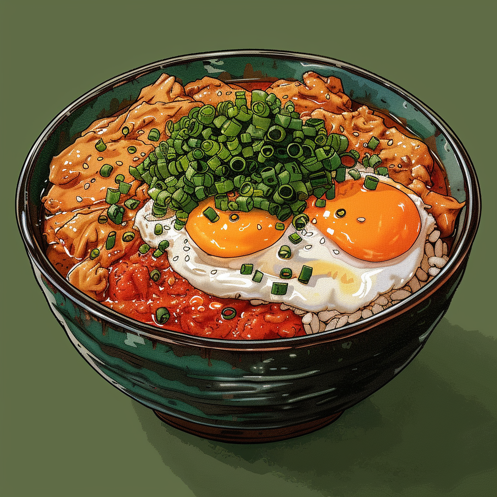

Oyakodon

Description
This is a recipe from the great J Kenji Lopez-Alt. The original recipe page can be seen HERE
Its basically the pizza of Japan. Minimal ingredients, minimal time.
Make the broth at home or get some instant store bought. Its just a combination of dashi, soy sauce, dry sake and sugar.
Ingredients
- 1 cup of dashi
- 2 tablespoons (30ml) dry sake
- 1 tablespoon (15ml) soy sauce, plus more to taste
- 1 tablespoon (15g) sugar, plus more to taste
- 1 large onion (about 6 ounces; 170g), thinly sliced
- 12 ounces (340g) boneless, skinless chicken thighs or breast, thinly sliced
- 3 scallions, ends trimmed and thinly sliced, divided
- 2 stems mitsuba (optional; see note)
- 3 to 4 large eggs
Directions
- Combine dashi, sake, soy sauce, and sugar in a 10-inch skillet and bring to a simmer over high heat. Adjust heat to maintain a strong simmer. Stir in onion and cook, stirring occasionally, until onion is half tender, about 5 minutes. Add chicken pieces and cook, stirring and turning chicken occasionally, until chicken is cooked through and broth has reduced by about half, 5 to 7 minutes for chicken thighs or 3 to 4 minutes for chicken breast. Stir in half of scallions and all of mitsuba (if using), then season broth to taste with more soy sauce or sugar as desired. The sauce should have a balanced sweet-and-salty flavor.
- Reduce heat to a bare simmer. Pour beaten eggs into skillet in a thin, steady stream, holding chopsticks over edge of bowl to help distribute eggs evenly (see video above). Cover and cook until eggs are cooked to desired doneness, about 1 minute for runny eggs or 3 minutes for medium-firm.
- To Serve: Transfer hot rice to a single large bowl or 2 individual serving bowls. Top with egg and chicken mixture, pouring out any excess broth from saucepan over rice. Add an extra egg yolk to center of each bowl, if desired (see note). Garnish with remaining sliced scallions and togarashi. Serve immediately.
Notes
Homemade dashi is nice, but not necessary for this simple dish, which has so many other strong flavors.Mitsuba is a Japanese herb similar to parsley. It can be found in Japanese grocery stores; omit it if unavailable. For a richer finished dish, use 4 eggs, reserving 2 of the yolks. Beat the extra egg whites together with the eggs in step 2, then add the reserved egg yolks to the finished bowls just before serving. Togarashi is Japanese chile powder, which comes in both ichimi (chiles only) and shichimi (chiles blended with other dried aromatics) versions. Either will work on this dish.